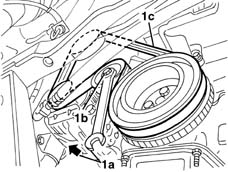

1092B40 air conditioner compressor/alternator drive belt - r + r
- Path
- Procedures > 10 ENGINE > 1092 VARIOUS ENGINE COMPONENT CONTROLS > 1092B water pump and alternator drive > 1092B40 air conditioner compressor/alternator drive belt - r + r
- Kind
- repair procedure (removal / refitting; the operation number is the code)
- Applies to
- engines: 1.2 8v, 1.2 16v, 1.4 16v; all production periods
- Interactive page
- https://sloeber94.github.io/elrnDB-lYpsln/en/#/2428985
Applies to: engines: 1.2 8v; all production periods
 Removing
Removing
 Refitting
RefittingPlace the vehicle on a lift.
7055B91 Right front WHEEL ARCH LINER - R.R.
7055B66 Engine compartment DUST SHIELD protection in right front wheel arch - R.R.
1. Fit a spanner (1a) in the services belt tensioner socket (1b) and rotate it in the direction of the arrow, then release and remove the services belt (1c).

Applies to: engines: 1.2 16v; all production periods
Removing
RefittingPlace the vehicle on a lift.
7055B91 Right front WHEEL ARCH LINER - R.R.
7055B66 Engine compartment DUST SHIELD protection in right front wheel arch - R.R.
1. Fit a spanner (1a) in the services belt tensioner socket (1b) and rotate it in the direction of the arrow, then release and remove the services belt (1c).
Applies to: engines: 1.4 16v; all production periods
Removing
RefittingPlace the vehicle on a lift.
7055B91 Right front WHEEL ARCH LINER - R.R.
7055B66 Engine compartment DUST SHIELD protection in right front wheel arch - R.R.
1. Fit a spanner (1a) in the services belt tensioner socket (1b) and rotate it in the direction of the arrow, then release and remove the services belt (1c).
Applies to: engines: 1.2 8v; all production periods
Refitting
RemovingCheck that the belt is not damaged.
Refit the service belt, moving the tensioner by inserting the wrench in the fitting.
7055B66 Engine compartment DUST SHIELD protection in right front wheel arch - R.R.
7055B91 Right front WHEEL ARCH LINER - R.R.
Remove the vehicle from the lift.
Applies to: engines: 1.2 16v; all production periods
Refitting
RemovingCheck that the belt is not damaged.
Refit the service belt, moving the tensioner by inserting the wrench in the fitting.
7055B66 Engine compartment DUST SHIELD protection in right front wheel arch - R.R.
7055B91 Right front WHEEL ARCH LINER - R.R.
Remove the vehicle from the lift.
Applies to: engines: 1.4 16v; all production periods
Refitting
RemovingCheck that the belt is not damaged.
Refit the service belt, moving the tensioner by inserting the wrench in the fitting.
7055B66 Engine compartment DUST SHIELD protection in right front wheel arch - R.R.
7055B91 Right front WHEEL ARCH LINER - R.R.
Remove the vehicle from the lift.
Topics linked from this page (3)
- 4450B04 right front wheel r r
- 7055B66 Engine compartment DUST SHIELD protection in right front wheel arch - R.R.
- 7055B91 Right front WHEEL ARCH LINER - R.R.
Topics that link to this page (17)
- 0510A20 timing gear with belt drive - check - carry out operation with cam cover(s) removed and tappets adjusted
- 0510A30 cam lift - check with cam cover(s) removed
- 1016B10 single cylinder head extension - change gasket
- 1016C10 cylinder head - r + r and replace gasket
- 1020D14 front crank shaft oil seal cover - r + r and replace seals for versions with oil pump on crank shaft, timing side
- 1020D18 front crank shaft cover oil seal - replace
- 1028H20 piston with connecting rod - r r
- 1032B10 toothed timing belt - r + r for timing adjustment or replacement
- 1032B46 toothed drive pulley - r + r
- 1032B52 toothed driven pulley (one) - r + r
- 1032C18 mobile timing system tensioner - r + r for 24 valve engines
- 1036B10 overhead camshaft - r r on vehicle
- 1036L10 camshafts in cylinder head extension - r r - includes cylinder head extension replacement if necessary
- 1036L30 front oil seal of intake camshaft in cylinder head extension replace
- 1088C10 water pump - r + r
- 1092A10 Crankshaft services PULLEY - R.R.
- 1092B42 Air conditioning compressor and alternator drive belt TENSIONER - R.R.